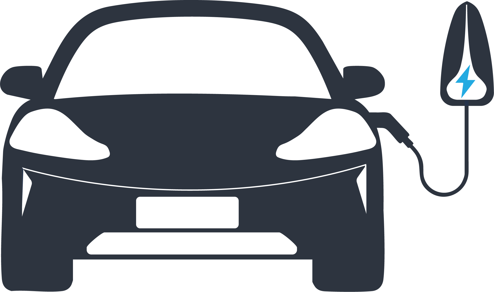

เครื่องคำนวณเวลาชาร์จ EV
Real-Time Estimator V1.5
CHARGING STATUS
Active
Ready At / เวลาชาร์จเสร็จ
--:-- น.
วันถัดไป
Duration / เวลาชาร์จรวม
-- ชม. -- นาที
พลังงานสะสมที่จะได้รับ:
-- kWh
กำลังชาร์จเฉลี่ยจริง:
-- kW
Hyptec HT
แบตเตอรี่ใช้งานจริง 83.3 kWh | คาลิเบรต 231V
Calibrated 231V
32A (7.39 kW)
64.7%
100.0%
พรีเซ็ตด่วน:
⚠️ เปอร์เซ็นต์เป้าหมายต้องสูงกว่าแบตเตอรี่ปัจจุบันเพื่อเริ่มคำนวณ
⚙️ ข้อมูลสูตรคำนวณทางฟิสิกส์ (V1.5) คลิกเปิด
• สูตรคำนวณกำลังไฟ: $kW = \frac{\text{Volt} \times \text{Amp}}{1000}$
• สถิติจริงและสูตรชดเชย: พัฒนาขึ้นด้วยสูตร BMS Tapering Curve เพื่อจำลองเวลาสูญเสียจริงจากการทดสอบช่วง 64.7%-100% (ชาร์จ 5h 20m) สำหรับการชาร์จรถไฟฟ้าที่มีเสถียรภาพสูงสุด